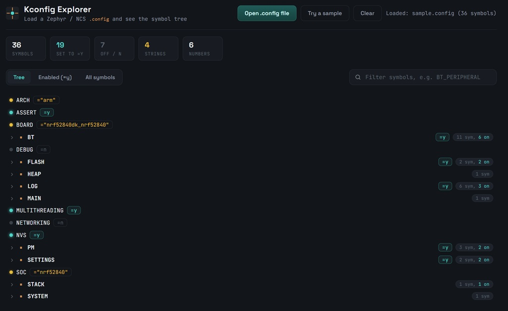
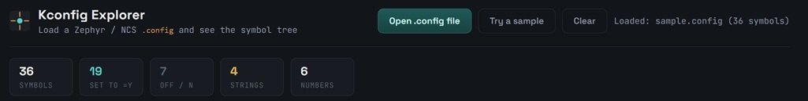
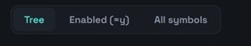
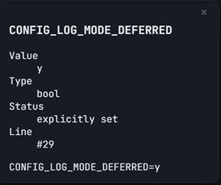

Kconfig Explorer — User Guide
Welcome to the official documentation for Kconfig Explorer. Here you'll find explanations and step-by-step instructions for getting the most out of the tool.
Use the navigation on the left to jump straight to any chapter or tool.
What the tool is for
Zephyr and nRF Connect SDK (NCS) projects generate a merged build/zephyr/.config file containing thousands of CONFIG_* (and, in sysbuild multi-image builds, SB_CONFIG_*) symbols. That file is flat text, hard to skim, and impossible to search visually. This tool loads it entirely client-side (nothing uploaded anywhere) and turns it into a browsable, searchable UI — useful for debugging build issues, comparing configurations, auditing what's enabled in a board/app combo, or just learning what a given sample turned on.
2. User Interface
The Kconfig Explorer user interface is your central starting view.

2.1 Input controls (top bar)

- Open button (file picker) — loads any .config or plain-text file with CONFIG_X=value lines. Also supports drag-and-drop anywhere on the page.
- "Try a sample" button — loads a small built-in example .config so you can explore the UI immediately without a real build directory.
- Clear button — appears once a file is loaded; resets the view.
- File name label — shows which file is currently loaded.
- Stats bar — summary counts (e.g. total symbols, how many are enabled) once a file is parsed.
2.2 The three tabs

- Tree — symbol names are split on _ after the CONFIG_/SB_CONFIG_ prefix and nested into a folder-style hierarchy (e.g. BT → PERIPHERAL, GATT → CLIENT, DYNAMIC_DB). This mirrors Kconfig's menu structure closely for common cases, letting you drill into a subsystem (like BT_* or LOG_*) the way you would in menuconfig, purely from naming conventions — no need to parse actual Kconfig source files. If the file has both CONFIG_ and SB_CONFIG_ symbols (common in sysbuild output), the tree splits into two top-level groups so the namespaces don't mix.
- Enabled (=y) — a flat, searchable list of every boolean symbol turned on. Handy for quickly answering "what features does this build actually have enabled?"
- "Top-level symbols only" checkbox — narrows the list to symbols with no further _ after the prefix (e.g. CONFIG_BT, SB_CONFIG_MCUBOOT), hiding all the finer sub-options (CONFIG_BT_PERIPHERAL, etc.) for a higher-level overview.
- "Export list (.txt)" button — downloads the currently-filtered enabled list as a text file, useful for diffing against another build or pasting into a bug report.
- All symbols — every parsed symbol (booleans, strings, numbers, and explicitly-unset # CONFIG_X is not set entries) in one sortable table.
- Sort buttons: Name, Value, Line # — reorder the table by symbol name, its value, or its position in the original file (useful for spotting where in the file a setting came from).
2.3 Search box (applies to whichever tab is active)
Filters symbols by substring match (e.g. typing BT_PERIPHERAL) and highlights matches directly in the tree view. An × button clears the filter.
2.4 Details panel

Click any symbol (in any tab) to open a side panel showing:
- Its current value
- Its inferred type (bool / string / int/hex) Whether it was explicitly set (=y) or explicitly unset (# CONFIG_X is not set — Kconfig's convention for "no")
- The original raw line from the file (with line number)
This is useful for disambiguating things like whether a symbol is absent from the file (never touched) versus explicitly disabled.
3. Parsing rules (what it recognizes)
- CONFIG_NAME=y / =n → boolean
- CONFIG_NAME="string" → string (quotes stripped, escapes unescaped)
- CONFIG_NAME=123 / =0x1F → number
- # CONFIG_NAME is not set → explicitly-unset boolean
- Everything else (comments, blank lines, unrelated prefixes) is ignored
4. Caveat worth knowing
The tree grouping is purely string-splitting on _ — it doesn't parse actual Kconfig menu definitions, so occasionally a group boundary won't match the "official" menuconfig structure. For well-known subsystems (BT, LOG, etc.) it lines up well.
5. FAQ & Help
Q: What should I do if a tool won't load?
A: First try clearing your browser cache and reloading the page.